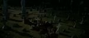
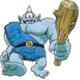
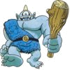

Copyright © Fred Weinhaus My scripts are available free of charge for non-commercial (non-profit) use, ONLY. For use of my scripts in commercial (for-profit) environments or non-free applications, please contact me (Fred Weinhaus) for licensing arrangements. My email address is fmw at alink dot net. If you: 1) redistribute, 2) incorporate any of these scripts into other free applications or 3) reprogram them in another scripting language, then you must contact me for permission, especially if the result might be used in a commercial or for-profit environment. Usage, whether stated or not in the script, is restricted to the above licensing arrangements. It is also subject, in a subordinate manner, to the ImageMagick license, which can be found at: http://www.imagemagick.org/script/license.php Please read the Pointers For Use on my home page to properly install and customize my scripts. |
|
Computes the normalized cross correlation similarity metric between two equal dimensioned images |
last modified: December 15, 2018
|
USAGE: similar [-m mode] infile1 infile2 -m ..... mode ..... colorspace mode; g (for grayscale) or rgb; default=g PURPOSE: To compute the normalized cross correlation similarity metric between two equal dimensioned images. DESCRIPTION: SIMILAR computes the normalized cross correlation similarity metric between two equal dimensioned images. The normalized cross correlation metric measures how similar two images are, not how different they are. The range of ncc metric values is between 0 (dissimilar) and 1 (similar). If mode=g, then the two images will be converted to grayscale. If mode=rgb, then the two images first will be converted to colorspace=rgb. Next, the ncc similarity metric will be computed for each channel. Finally, they will be combined into an rms value. NOTE: this metric does not work for constant color channels as it produces an ncc metric = 0/0 for that channel. Thus it is not advised to run the script with either image having a totally opaque or totally transparent alpha channel that is enabled. ARGUMENTS: -m mode ... MODE for colorspace to use when applying the normalized cross correlation metric on the two images. If mode=g, then the two image will be converted to grayscale. If mode=rgb, then the ncc similarity metric will be computed for each channel and then combined as its rms value. Default=g NOTE: For best accuracy, this script should be run in HDRI compilation of IM. For reference on the normalized cross correlation metric, see http://en.wikipedia.org/wiki/Cross-correlation#Normalized_cross-correlation CAVEAT: No guarantee that this script will work on all platforms, nor that trapping of inconsistent parameters is complete and foolproof. Use At Your Own Risk. |
(provided by user kinder, see http://www.imagemagick.org/discourse-server/viewtopic.php?f=1&t=15264)
|
Image 1 |
Image 2 |
NCC Metric |
NCC Metric |
|
1a.jpg |
1b.jpg |
0.879866 |
0.876972 |
|
2a.jpg |
2b.jpg |
0.30973 |
0.331926 |
|
3a.jpg |
 3b.jpg |
0.240242 |
0.240434 |
|
4a.jpg |
4b.jpg |
0.807486 |
0.806117 |
|
1a.jpg |
1a.jpg |
1.0042 |
1.00107 |
|
1a.jpg |
convert 1a.jpg -negate 1an.jpg |
0 |
0 |
|
 convert cyclops.png -fuzz 10% |
 convert cyclops.png -fuzz 3% |
0.977871 |
0.987846 |
|
What the script does is as follows (for any channel):
This is equivalent to the following IM commands for the case of mode=g:
|